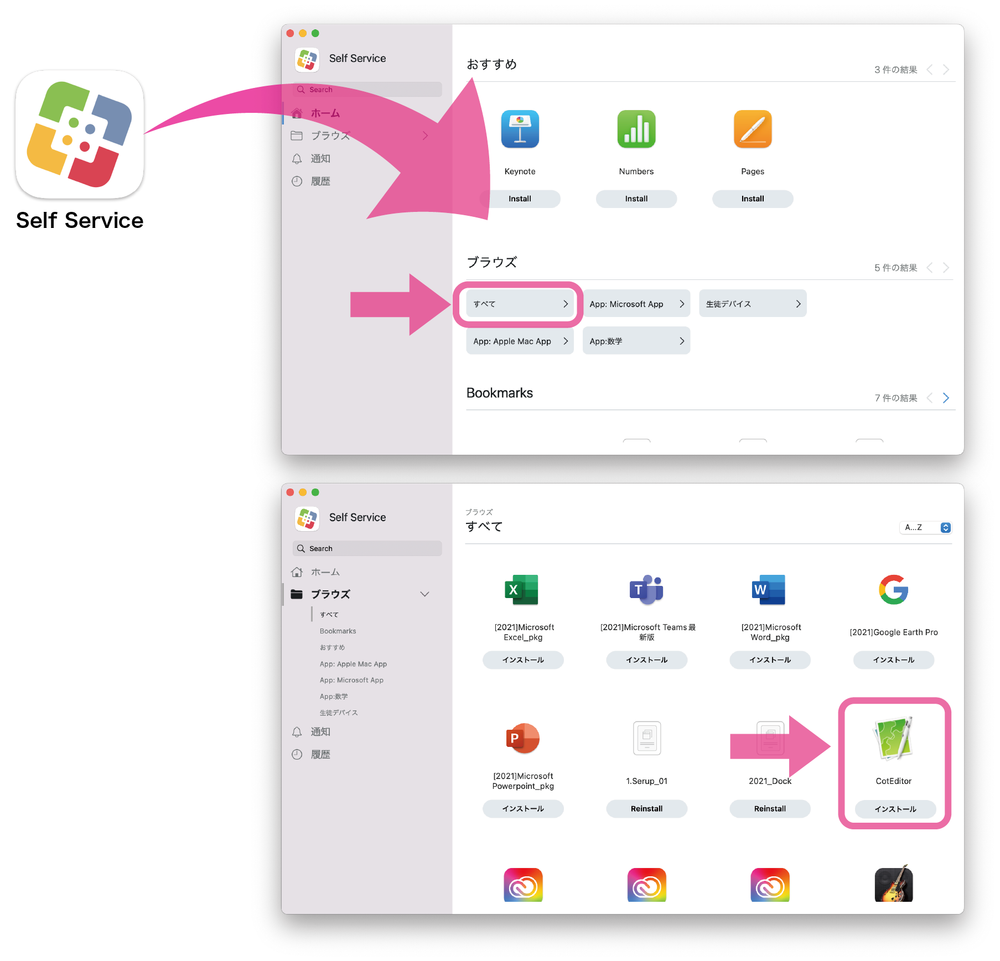
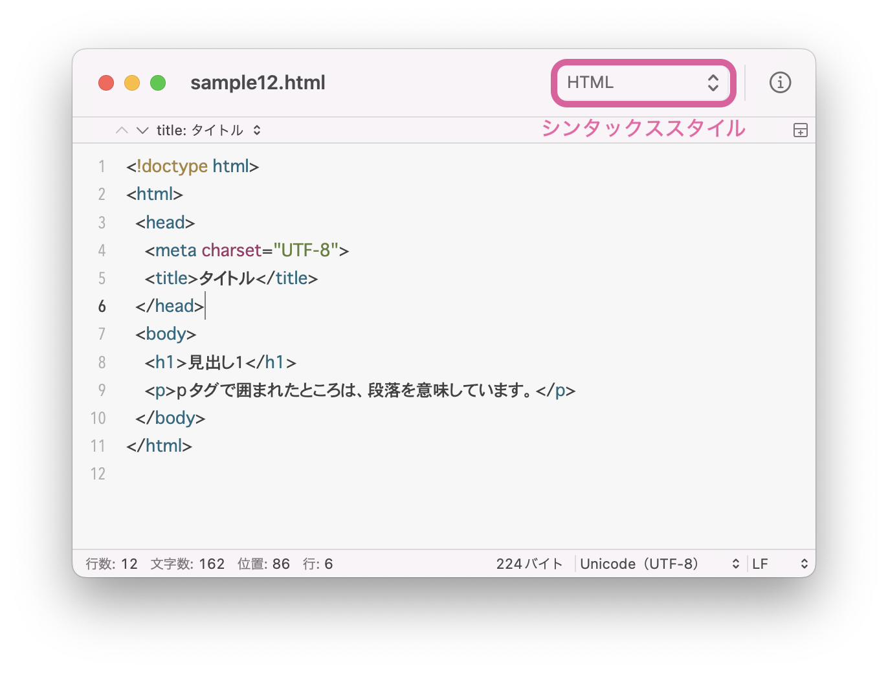
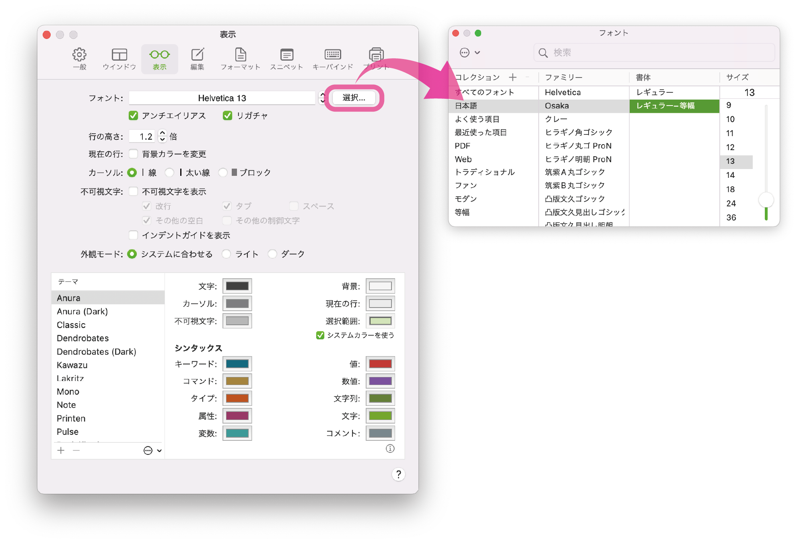
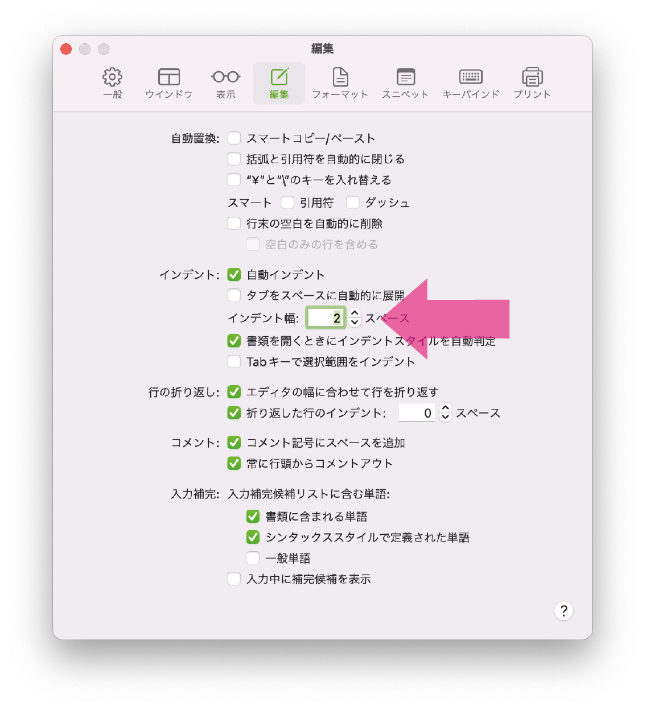

(1) HTMLとは
HTMLとは
HTMLとは、ハイパー テキスト マークアップ ランゲージ（Hyper Text Markup
Language）の略で、Webページを作成するための言語です。
ハイパーテキスト (hypertext) とは、複数の文書（テキスト）を相互に関連付け、結び付ける仕組みのことで、1965年にネルソンによって「テキストを超える」という意味から"hyper-"（～を超えた） "text"（文書）と名付けられました。
マークアップとは、コンテンツのはじめとおわりにタグとよばれるしるしをつけ、その部分に何らかの意味づけをすることを指します。
タグとは
タグとは、<と>で挟んで指定し、テキストに見出し，段落，箇条書き，強調，リンク，画像，表など、さまざまな役割を持たせるための特殊な文字列のことです。
次の例では、<h1>と</h1>に挟まれたテキストに見出しという意味を与えています。
<h1>見出し１</h1>
また、次の例では、<p>と</p>に挟まれたテキストに段落という意味を与えています。
<p>段落のはじまり</p>
このようなタグを使って、コンピュータがそのページの構造を理解できるようにすることがHTMLの役割です。
(2) 実習の進め方
このHTML実習のサイトの使い方について説明します。
例文ブロック
次の背景のブロックは例文ブロックです。HTMLの書き方の例を示しています。
特に書き写す必要はありませんが、例文を読んで理解してください。
この背景のブロックは例文ブロックです。
例文を読んで理解してください。
特に書き写す必要はありません。
実習ブロック（新規作成）
次の背景のブロックは、実習ブロックです。コードを書き写しながら理解してください。[新規作成]とある場合には、HTMLファイルを新規作成し、指定されたファイル名で保存してください。
<!-- [新規作成] ファイル名.html -->
この背景のブロックは実習ブロックです。
自分のPCにファイルに、ここに記載されたコードを書き写しながら理解してください。
ブロックのタイトルに[新規作成]とある場合は、HTMLファイルを新規作成し、
指定されたファイル名で保存してください。
実習ブロック（編集）
[新規作成]がない場合には、既に作成してあるファイルを編集してください。
<!-- ファイル名.html -->
この背景のブロックは実習ブロックです。
自分のPCにファイルに、ここに記載されたコードを書き写しながら理解してください。
[新規作成]がない場合には、既に作成してあるファイルを編集してください。
実習ブロック（一部のみ記載）
ファイル名のあとに記述場所を指定されている場合は、指定された場所にコードを書き写してください。次の例では実習コード①の場所にコードを記述します。
<!-- ファイル名.html ＞ 実習コード① -->
この背景のブロックは実習ブロックです。
自分のPCにファイルに、ここに記載されたコードを書き写しながら理解してください。
この場合は、既に作成してるHTMLファイルの実習コード①の場所に書き写してください。
なお、実習コード①の場所とは、テンプレートの中には次のように指示があります。
<!-- ▼実習コード① ここから▼ -->
<!-- ▲実習コード① ここまで▲ -->
(3) 実習の準備
実習ファイルの保存先
Finderの書類フォルダの中に、HTML実習というフォルダを作成します。これ以降、このHTML実習では、このフォルダの中にファイルを作成していきます。
このフォルダに保存したファイルは、自動的にはバックアップされません。何かあったときに備えて、OneDriveやGoogle
Driveにも保存しておきましょう。
CotEditor
HTMLを編集するためには、CotEditorというアプリを使います。
-
Launchpadを開く（Dockのアイコンをクリック または トラックパッドを４本指でピンチ）
- CotEditorを開く（CotEditorが見つからない場合は、下記の手順でインストールする）
CotEditorのインストール
※CotEditorが既にインストールされている場合は、この操作は不要です。自動的にインストールするようにしましたが、もしインストールされていなかったら下記の手順に従ってインストールしてください。
Self Serviceを開きCotEditorをインストールします。HTMLファイルのソースを編集するときには、このアプリを使用します。

CotEditorの設定
CotEditorを開き、HTMLの編集をしやすくするための設定をします。
ウィンドウ右上のシンタックススタイルをHTMLにします。シンタックススタイルとは、HTMLのタグなどに対して自動的に文字色をつける機能です。

メニューバーの[CotEditor]＞[環境設定]を開き（コマンド⌘＋カンマ,)、「表示」または「外観」タブからフォントをOsaka
レギュラー 等幅に変更します。

「Osaka レギュラー-等幅」がみつからない場合
- Spotlight（コマンド⌘＋スペース）を開き「Font Book.app」と入力する。
- Font Book.appを開く。
- 検索バーで「Osaka」と入力し、Osakaを探す。
- 「ダウンロード」ボタンを押して、ダウンロードする。
設定の編集タブから、インデント幅を2スペースに変更します。
